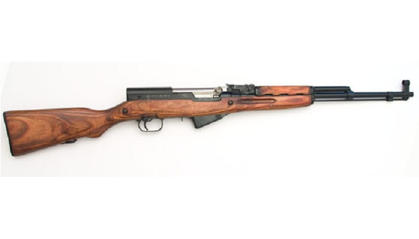
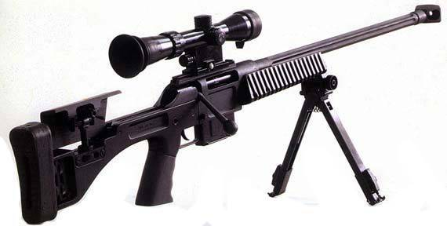
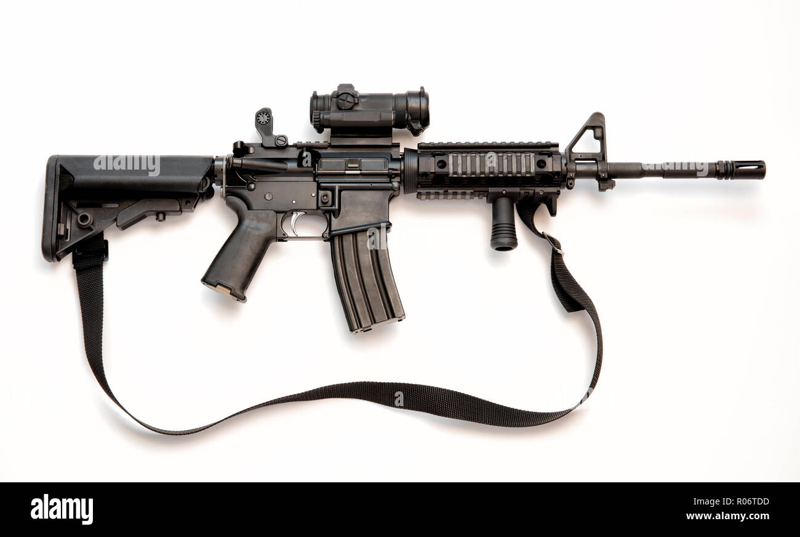
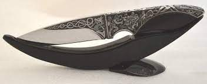
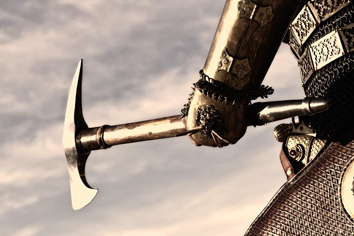
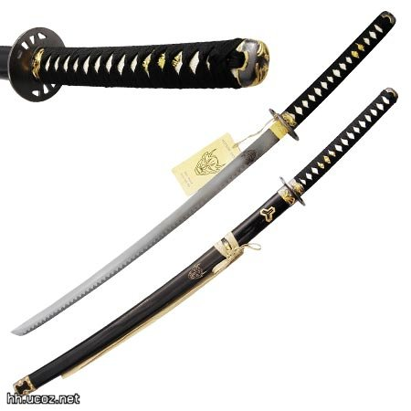

სანადირო იარაღი:
DRAKE cal.12 - არის ორ ლულიანი სანადირო იარაღს

CZ 1012 SYNTETIC cal.12 - არის ნახევრად ავტომატური სანადირო იარაღი

ლეგენდარული სიმონოვის კარაბინი (სკს)
საბრძოლო იარაღი
JS 7,62 - სნაიპერული იარაღი
ak_47 - ავტომატური იარაღი
m4 - ავტომატური იარაღი
ცივი იარაღი
ცივ იარაღებს მიეკუთვნება ახლო მანძილებზე საბრძოლი იარაღები ( დანა, ხმალი, ნაჯახი, მაჩეტე, კასტეტი და სხვა)
დანა
საბრძოლო ცული
სამურაის ხმალი
